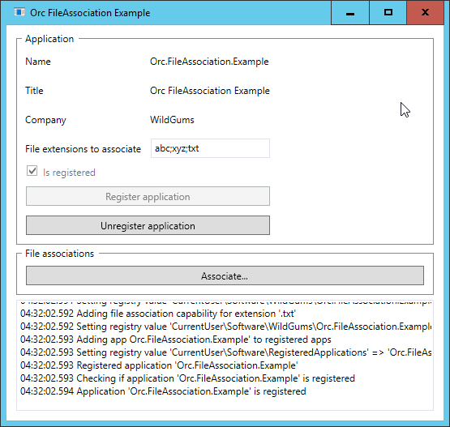
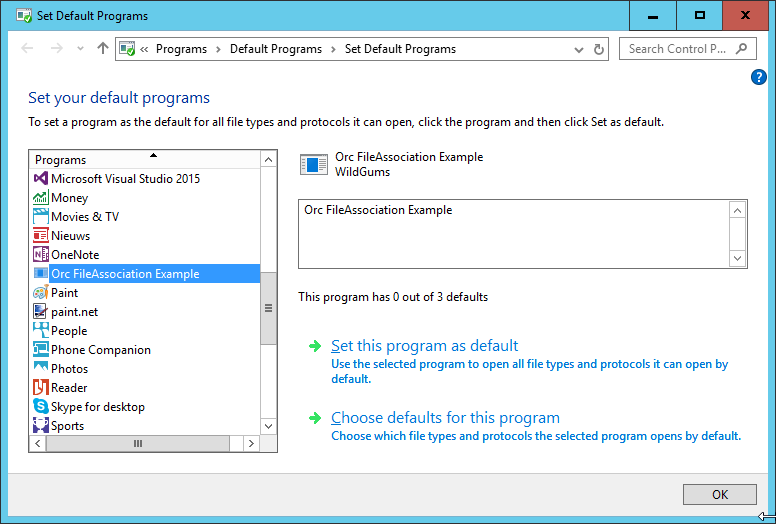
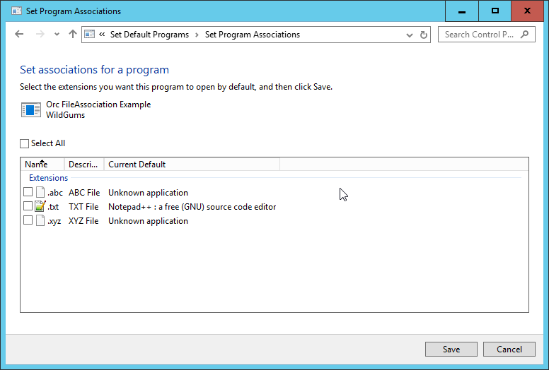

Find the source at https://github.com/WildGums/Orc.FileAssociation.
| Chat |  |
| Downloads |  |
| Stable version |  |
| Unstable version |  |
Makes it easy to associate files with your application.
Quick introduction
Using this library is easy. You need to register the app, then let the user associate files with it. This library does not require elevation, it only applies the file association for the current user.
Application registration
Registering an application
It is important to register an application. This way Windows knows that the application supports specific file types. To register an application, use the following code:
var assembly = AssemblyHelper.GetEntryAssembly();
var applicationInfo = new ApplicationInfo(assembly);
_applicationRegistrationService.RegisterApplication(applicationInfo);
When using an assembly for the ApplicationInfo, the library will extract all the relevant information from the assembly directly.
Unregistering an application
When an application is being uninstalled, you need to remove all the required registry entries. This can be done by using the following code:
var assembly = AssemblyHelper.GetEntryAssembly();
var applicationInfo = new ApplicationInfo(assembly);
_applicationRegistrationService.UnregisterApplication(applicationInfo);
Updating a registered application
To always keep the registry up to date, you can call this method at the startup of your app (note that this does not require elevation or administrator rights):
var assembly = AssemblyHelper.GetEntryAssembly();
var applicationInfo = new ApplicationInfo(assembly);
_applicationRegistrationService.UpdateRegistration(applicationInfo);
File association
To allow a user to pick your app as the default one for a file type, you need to use the IFileAssociationService as shown below:
var assembly = AssemblyHelper.GetEntryAssembly();
var applicationInfo = new ApplicationInfo(assembly);
_fileAssociationService.AssociateFilesWithApplication(applicationInfo.Name);
Example application
This repository contains an example application that allows developers to test the logic and see how the library should be used. Below are a few screenshots:



Additional notes / credits
This library is based on this StackOverflow answer: